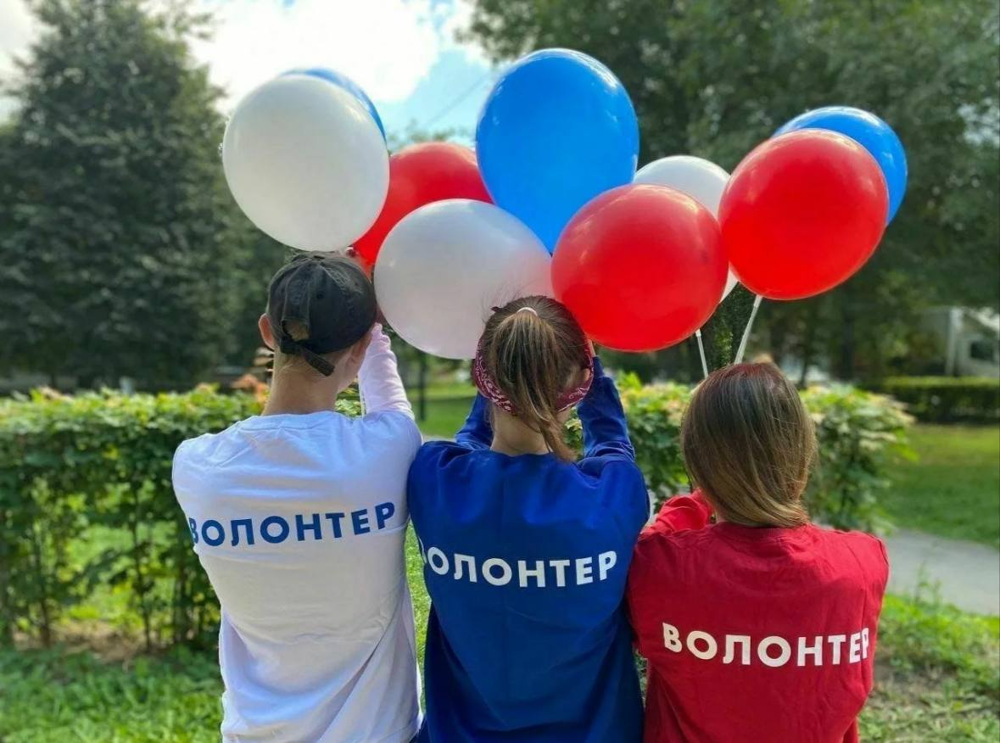

Волонтёрство — это реальная возможность помогать и быть полезным.
Волонтёрские организации играют важную роль в жизни общества, объединяя людей, готовых тратить своё время и силы на помощь другим.
На этом сайте собрана информация о волонтёрских инициативах, их направлениях и возможностях участия.
Здесь вы сможете узнать, как работают волонтёрские организации, какие проекты существуют и как выбрать то направление, которое действительно вам близко.
Волонтёрство не требует особой подготовки — главное желание помогать и делать мир немного лучше.
Этот ресурс создан как удобная отправная точка для тех, кто хочет разобраться в теме волонтёрства и сделать первый шаг к участию в добрых делах.
Не можешь найти что-то по душе?
Тест поможет!